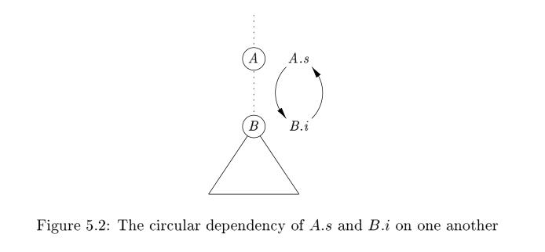
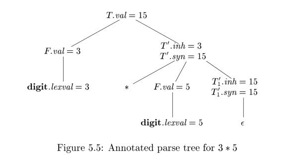

5.1 Syntax-Directed Definitions#
A syntax-directed definition (SDD) is a context-free grammar together with attributes and rules. Attributes are associated with grammar symbols and rules are associated with productions. If X is a symbol and a is one of its attributes, then we write X.a to denote the value of a at a particular parse-tree node labeled X . If we implement the nodes of the parse tree by records or objects, then the attributes of X can b e implemented by data fields in the records that represent the nodes for X . Attributes may be of any kind: numbers, types, table references, or strings, for instance. The strings may even be long sequences of
code, say code in the intermediate language used by a compiler.
NOTE: SDD consist of two element: attribute and rule, So SDD is used in the future, you need to be clear it means attribute and rule.
5.1.1 Inherited and Synthesized Attributes#
We shall deal with two kinds of attributes for nonterminals:
- A synthesized attribute for a nonterminal
Aat a parse-tree nodeNis defined by a semantic rule associated with the production atN. Note that the production must haveAas its head. A synthesized attribute at nodeNis defined only in terms of attribute values at the children ofNand atNitself. - An inherited attribute for a nonterminal
Bat a parse-tree nodeNis defined by a semantic rule associated with the production at the parent ofN. Note that the production must haveBas a symbol in its body. An inherited attribute at nodeNis defined only in terms of attribute values atN's parent,Nitself, andN's siblings.
NOTE: The above classification method is based on how to calculate the attribute value. It is obvious that the direction of computation of synthesized attribute is contrast to inherited attribute's. More precisely, synthesized attribute is suitable to bottom-up parsing while inherited attribute is suitable to top-down parsing. Example 5.2 show how synthesized attribute is calculated while example 5.3 show how inherited attribute is calculated. The computation of attribute will be discussed in later chapter.
NOTE: A SDD can has inherited attribute and inherited attribute at the same time, which is introduced in chapter 5.1.2.
While we do not allow an inherited attribute at node N to be defined in terms of attribute values at the children of node N , we do allow a synthesized attribute at node N to be defined in terms of inherited attribute values at node N itself.
NOTE: Inherited attribute, the name has implied that the attribute is inherited from parent, so it is natural that inherited attribute at node
Ncan not be defined in terms of attribute values at the children of nodeNor it will be self-contradictory.
Terminals can have synthesized attributes, but not inherited attributes. Attributes for terminals have lexical values that are supplied by the lexical analyzer; there are no semantic rules in the SDD itself for computing the value of an attribute for a terminal.
NOTE: How about a start symbol? It is obvious that a start symbol can not has inherited attribute because it is the ancestor and it has no parent.
Example 5.1: skipped
An SDD that involves only synthesized attributes is called S-attributed; the SDD in Fig. 5.1 has this property. In an S-attributed SDD, each rule computes an attribute for the nonterminal at the head of a production from attributes taken from the body of the production.
For simplicity, the examples in this section have semantic rules without side effects. In practice, it is convenient to allow SDD's to have limited side effects, such as printing the result computed by a desk calculator or interacting with a symbol table. Once the order of evaluation of attributes is discussed in Section 5.2, we shall allow semantic rules to compute arbitrary functions, possibly involving side effects.
An S-attributed SDD can be implemented naturally in conjunction with an LR parser.
An SDD without side effects is sometimes called an attribute grammar. The rules in an attribute grammar define the value of an attribute purely in terms of the values of other attributes and constants.
5.1.2 Evaluating an SDD at the Nodes of a Parse Tree#
To visualize the translation specified by an SDD, it helps to work with parse trees, even though a translator need not actually build a parse tree. Imagine therefore that the rules of an SDD are applied by first constructing a parse tree and then using the rules to evaluate all of the attributes at each of the nodes of the parse tree. A parse tree, showing the value(s) of its attribute(s) is called an annotated parse tree.
How do we construct an annotated parse tree? In what order do we evaluate attributes? Before we can evaluate an attribute at a node of a parse tree, we must evaluate all the attributes up on which its value depends. For example, if all attributes are synthesized, as in Example 5.1, then we must evaluate the
val attributes at all of the children of a node before we can evaluate the val attribute at the node itself.
With synthesized attributes, we can evaluate attributes in any bottom-up order, such as that of a postorder traversal of the parse tree; the evaluation of S-attributed definitions is discussed in Section 5.2.3.
For SDD's with both inherited and synthesized attributes, there is no guarantee that there is even one order in which to evaluate attributes at nodes. For instance, consider nonterminals A and B , with synthesized and inherited attributes A.s and B.i, respectively, along with the production and rules
| PRODUCTION | SEMANTIC RULES |
|---|---|
| $A \to B$ | A.s = B.i;B.i = A.s + 1 |
These rules are circular; it is impossible to evaluate either A.s at a node N or B.i at the child of N without first evaluating the other. The circular dependency of A.s and B.i at some pair of nodes in a parse tree is suggested by Fig. 5.2.

It is computationally difficult to determine whether or not there exist any circularities in any of the parse trees that a given SDD could have to translate. Fortunately, there are useful sub classes of SDD's that are sufficient to guarantee that an order of evaluation exists, as we shall see in Section 5.2.
NOTE: Below is the explanation if why determining whether or not there exist any circularities in any of the parse trees of a given SDD is computationally difficult:
Without going into details, while the problem is decidable, it cannot be solved by a polynomial-time algorithm, even if P = N P , since it has exponential time complexity.
In fact, this is an algorithm problem to find cycle in graph.
Example 5.2: skipped
Example 5.3 : The SDD in Fig. 5.4 computes terms like 3 * 5 and 3 * 5 * 7. The top-down parse of input 3 * 5 begins with the production $T \to F T'$. Here, F generates the digit 3, but the operator * is generated by T'. Thus, the left operand 3 appears in a different subtree of the parse tree from *. An inherited attribute will therefore be used to pass the operand to the operator. The grammar in this example is an excerpt from a non-left-recursive version of the familiar expression grammar; we used such a grammar as a running example to illustrate top-down parsing in Section 4.4.
| PRODUCTION | SEMANTIC RULES |
|---|---|
| $T \to F T'$ | $T'.inh = F.val \ T.val = T'.syn$ |
| $T' \to * F T_1'$ | $T_1'.inh = T'.inh * F.val \ T'.syn= T_1'.syn$ |
| $T' \to \epsilon$ | $T'.syn = T'.inh$ |
| $F \to digit$ | $F.val = digit.lexval$ |
Figure 5.4: An SDD based on a grammar suitable for top-down parsing
Each of the nonterminals T and F has a synthesized attribute val ; the terminal digit has a synthesized attribute lexval. The nonterminal T' has two attributes: an inherited attribute inh and a synthesized attribute syn.
The semantic rules are based on the idea that the left operand of the operator * is inherited. More precisely, the head T' of the production $T' \to * F T_1'$ inherits the left operand of * in the production body. Given a term x * y * z , the root of the subtree for $* y * z$ inherits x. Then, the root of the subtree for
* z inherits the value of * x * y , and so on, if there are more factors in the term. Once all the factors have been accumulated, the result is passed back up the tree using synthesized attributes.

To see how the semantic rules are used, consider the annotated parse tree for 3 * 5 in Fig. 5.5. The leftmost leaf in the parse tree, labeled digit, has attribute value lexval = 3, where the 3 is supplied by the lexical analyzer. Its parent is for production 4, $F \to digit$. The only semantic rule associated with this production defines $F.val = digit.lexval$ , which equals 3.
At the second child of the root, the inherited attribute T'.inh is defined by the semantic rule T'.inh = F.val associated with production 1. Thus, the left operand, 3, for the * operator is passed from left to right across the children of the root.
The production at the node for T' is $T' \to * F T_1'$. (We retain the subscript 1 in the annotated parse tree to distinguish between the two nodes for T'.) The inherited attribute $T_1'.inh $ is defined by the semantic rule $T_1'.inh = T'.inh * F.val$ associated with production 2.
With $T'.inh = 3$ and $F.val = 5$, we get $T_1'.inh = 15$. At the lower node for $T_1'$, the production is $T' \to \epsilon$. The semantic rule $T'.syn = T'.inh$ defines $T_1'.syn = 15$. The syn attributes at the nodes for $T'$pass the value 15 up the tree to the node for T , where T.val = 15.